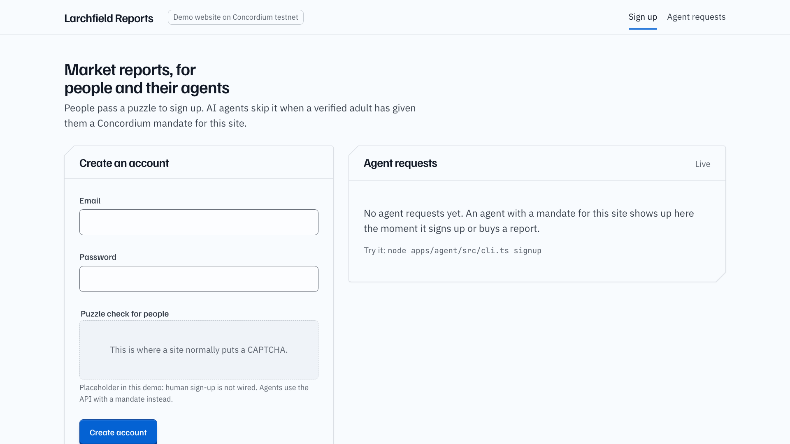
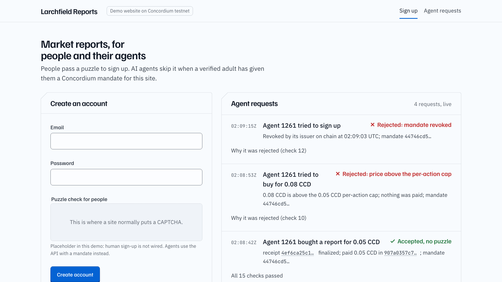
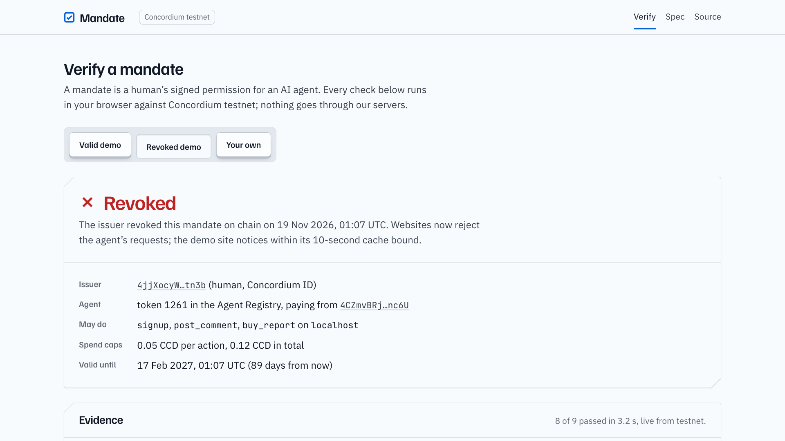

Let the agent through, not the bot farm.
A verified adult gives an AI agent a scoped, expiring, revocable mandate. Websites check it on Concordium instead of showing a CAPTCHA.

The fictional demo site Larchfield Reports: people get a puzzle (a placeholder here), agents with a mandate skip it.
Proves 18 or older, bound to their account, for this mandate. No birth date revealed. VRA and VAA anchored.
Owned by the human; names the agent’s signing key; Agent Card with the Verified by Concordium badge.
The agent’s ed25519 key is bound to the human’s account. The agent never holds the human’s key.
Actions, sites, expiry, spend caps, signed by the human; its hash sits in the agent’s on-chain metadata. Revoke = one transaction.
Drop-in Express middleware; x402 payments only from the agent’s registered wallet, within the caps.
| Component | Used for | Where in the code |
|---|---|---|
| Concordium ID, Verify & Access | Account-bound ZK age proof per mandate; any site re-verifies it | apps/console/src/issuer.ts, mandate-chain/src/adult.ts |
| Agent Registry (CIS-8004) | Agent NFT naming its key; mandate anchor; revocation | apps/console/src/issuer.ts, mandate-chain/src/reads.ts |
| CIS-8 external keys | Agent key bound to the human’s account | apps/console/src/issuer.ts |
| Agent Card and badge | Card on GitHub Pages, hash pinned; hosted badge check valid | apps/console/src/issuer.ts |
| Agent Registry MCP | Reads, builders, badge check, with gRPC fallback | mandate-chain/src/mcp.ts, view.ts |
| x402 in CCD | Payments from the registered agent wallet; own facilitator | apps/demo-site, apps/facilitator, mandate-verifier |
| Sponsored transactions | The human pays no fees; x402 fees sponsored | mandate-chain/src/tx.ts, facilitator/src/policy.ts |
| registerData | One receipt per accepted action | apps/demo-site/src/receipts.ts |

Demo site feed, newest first: refused after the revoke, and a 0.08 CCD purchase refused over the 0.05 CCD cap.

Public verify page, revoked demo mandate, checked live in the browser.
steps in one integration run, all passing
from revoke finalized to the site refusing
held by the human: every fee sponsored
All links open on CCDExplorer (testnet). Every step of the run, with its transaction: docs/EVIDENCE.md in the repository.
Identities come from Concordium’s self-service testnet identity provider with invented attributes (“Test Human”, born 1990-01-01). “Verified adult” proves the mechanism, not a real person.
The human’s signature is made by a local test wallet. The Concordium browser and mobile wallet signMessage flow gives the same signature type but was not exercised.
Each website’s verifier enforces the spend caps; the chain holds the anchor, the proof, the receipts and the payments as evidence. Protocol-Level Locks are not live and are not used.
Also: the demo’s replay store and spend ledger live in memory (one process). Before 19 November there were design notes and throwaway spikes, not in the repository. Built with an AI coding agent (Claude) under a human lead.